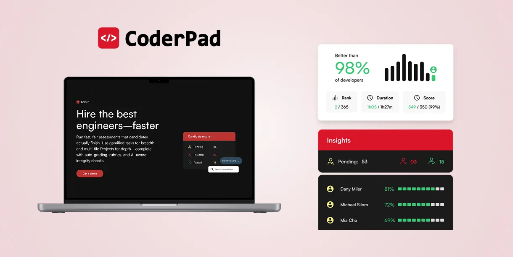
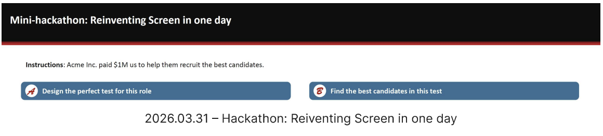
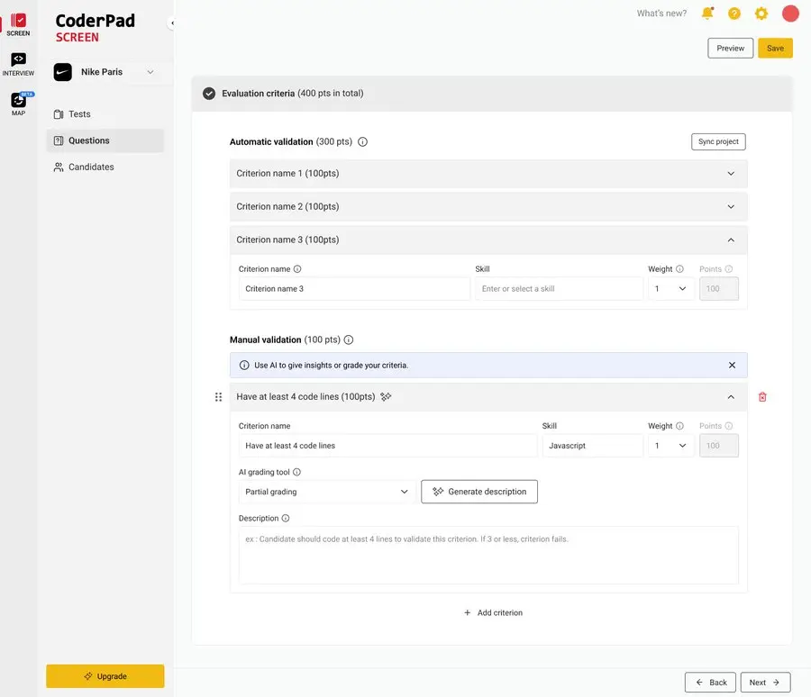
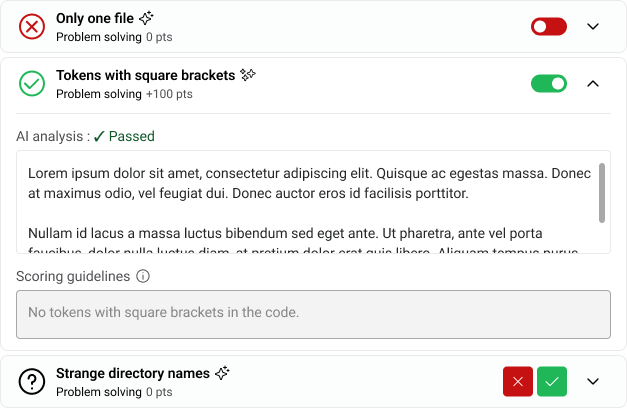
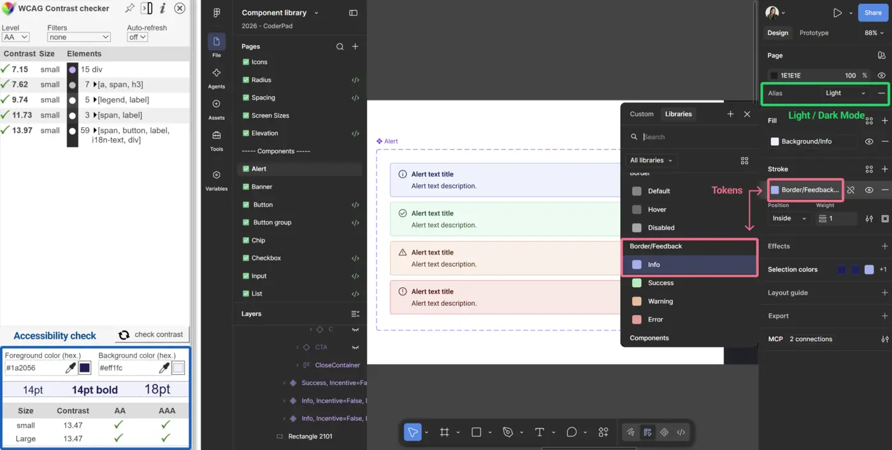
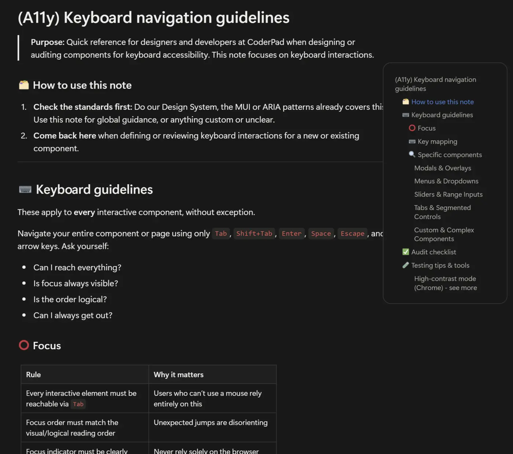
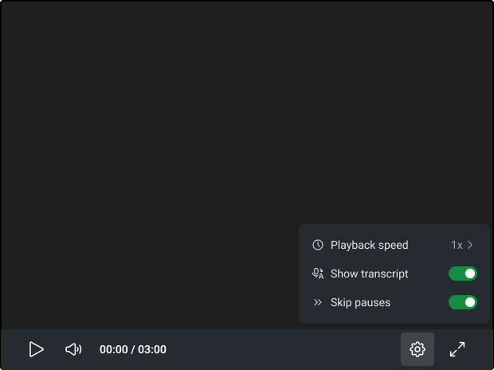
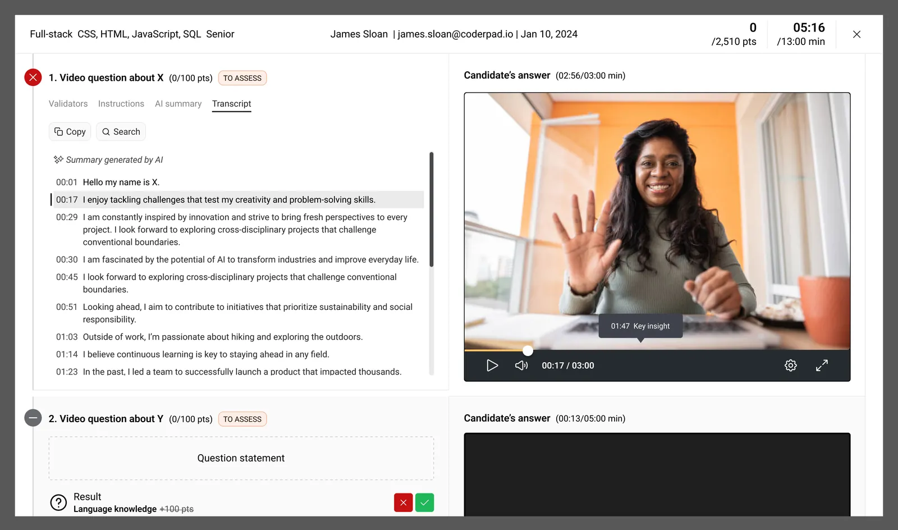

2026 • 9 mois
Repenser Screen à l'ère de l'IA : du signal de churn à la feuille de route produit
Plateforme SaaS de tests techniques

Le défi
CoderPad Screen est notre solution de tests techniques pour recruter des développeurs : exercices asynchrones à réaliser en autonomie, ou entretiens live encadrés par un recruteur.
Côté recruteurs, le constat était double : un volume de candidatures toujours plus important, avec peu d'outils pour les départager, et une IA de plus en plus utilisée par les candidats — au point que la majorité des scores grimpe, rendant des résultats plus nombreux et plus difficiles à interpréter.
Côté CoderPad, ces difficultés se traduisaient concrètement : un churn en hausse sur des comptes stratégiques, une concurrence de plus en plus agressive, et des fonctionnalités qui mettaient trop de temps à sortir en production pour suivre le rythme.
Ma mission : comprendre ce qui pesait vraiment dans ces départs, et transformer ce diagnostic en une feuille de route produit concrète pour aider les recruteurs à évaluer plus vite et plus juste, à l'ère de l'IA.
L'impact en chiffres
- x5Croissance du churn ARR sur les comptes à enjeu (T1, vs. année précédente) — le signal de départ du projet
- 60+entreprises ont adopté la notation IA en 3 mois
- −81%Cycle design → review (multiplié par 5), mené avec Gabriela
Méthodologie
Diagnostiquer
Du signal de churn au diagnostic terrain
Au premier trimestre, un signal de churn ARR en forte hausse sur nos comptes à enjeu a déclenché une phase de diagnostic croisant data et terrain : j'ai mené avec le PM une série d'entretiens avec des recruteurs utilisateurs et des calls clients, en complément de l'analyse data et des retours clients remontés par le Customer Success, pour comprendre ce qui pesait vraiment dans les décisions de résiliation. Ces entretiens ont fait ressortir un point de friction récurrent chez les comptes à risque : la notation manuelle des tests techniques, chronophage et peu fiable. Tous les recruteurs interrogés (100 %) peinaient à interpréter un rapport de candidat.
On a conclu qu'il fallait accélérer la compréhension et la structure des rapports, accélérer la vitesse de traitement des candidats pour un recruteur, et surtout rendre nos outils plus « IA-ready » — en intégrant l'IA plutôt qu'en la bloquant ou en la signalant comme de la triche.
Co-construire
Un hackathon pour transformer le diagnostic en pistes concrètes
Un hackathon d'une journée avec le PM et les développeurs nous a permis de co-construire des pistes de fonctionnalités : évaluer la connaissance et l'usage de l'IA des candidats via de nouvelles questions et tests dédiés, et donner aux recruteurs des outils IA pour évaluer plus efficacement leurs candidats — review assistée par IA, transcript vidéo, chatbot d'analyse.
On a ensuite construit la roadmap produit avec le PM, et j'ai écrit un article interne pour partager nos conclusions utilisateurs et la direction retenue (churn → entretiens & retours → résultats du hackathon → roadmap). Ma recommandation : prioriser en premier les outils IA pour les recruteurs, pour réduire le churn. Les retours post-entretiens étaient clairs : ils perdaient trop de temps et ne savaient pas comment départager leurs candidats, l'IA faussant les données et donnant un bon score à tous. J'ai donc demandé de prioriser deux chantiers : des critères de notation pour aller plus vite, et des questions de relance proposées automatiquement au candidat, selon sa réponse précédente à une question de code ou de projet, pour lui demander d'expliciter un choix (en vidéo, par écrit ou en partageant son écran avec audio et vidéo). Ces fonctionnalités ont été poussées jusqu'en production pendant l'été.
J'ai aussi proposé de mener en parallèle, en tâche de fond, la refonte du design system et de notre workflow de design avec l'IA : le PM l'a acceptée, car elle demandait du temps alors qu'il fallait livrer d'autres fonctionnalités rapidement.
Pour chaque axe stratégique, on discutait avec le PM des fonctionnalités à lancer et de leur ordre. Avant chaque chantier design, j'apportais le cadrage : benchmark, KPIs à suivre et entretiens à mener, puis validation du périmètre du ticket avec le PM avant de me lancer. Une fois en production, je créais ces KPIs dans nos dashboards pour vérifier l'effet de nos choix produit et design.

Le brief du mini-hackathon d'une journée qui a permis de co-construire les premières pistes de fonctionnalités avec le PM et les développeurs. Concevoir
Un copilote de décision pour évaluer un candidat
Concrètement : des critères configurables et des prompts personnalisés qui laissent l'IA pré-traiter les rendus de projet et faire remonter les signaux pertinents en soutien à la décision humaine — une réponse directe au manque de notation qualitative remonté par nos utilisateurs.
Plutôt que d'empiler des filtres, on a vu l'occasion de construire un copilote de décision : rendre l'IA digne de confiance pour un recrutement à fort enjeu, pas décider à la place du recruteur. J'ai conçu une notation IA en trois modes (sans IA, partielle, complète), mobile-first et responsive, et une autonomie IA ajustable — le recruteur définit ses critères et garde toujours la main sur la décision finale.
Les KPIs que j'avais fixés en amont : le taux d'acceptation du jugement de l'IA et la confiance des utilisateurs dans ce jugement, la confiance interne de l'IA dans sa réponse (évaluée par nos outils), le temps de lecture du rapport détaillé, en baisse, pour vérifier que la fonctionnalité aide vraiment à trancher plus vite, et la répartition d'usage entre les trois modes. Le mode complet (automatique) est le plus utilisé : un vrai besoin de gagner du temps et de faire confiance à l'outil, pas seulement de recevoir des suggestions à relire à la main.
Résultat : adoptée par 60+ entreprises en 3 mois, plus de 10 000 cas de test traités, +65 % de croissance d'usage d'un mois sur l'autre, et 95 % des utilisateurs d'accord avec les décisions de l'IA, un signal de confiance.

L'écran de configuration des critères de la notation assistée par IA de CoderPad — UI réelle, livrée en production. Trois modes (sans IA, partielle, complète) gardent le recruteur maître de la décision. 
Le rapport côté candidat : chaque critère affiche un verdict réussite/échec avec le raisonnement de l'IA en langage clair. Aller plus loin
Un chatbot de comparaison et des questions de relance
On a aussi créé un chatbot : dans une campagne de test, le recruteur peut lui demander d'analyser un ou plusieurs candidats, de générer une comparaison détaillée entre plusieurs profils, un résumé et un verdict sur les candidats à faire avancer.
On a complété ce dispositif avec des questions de relance automatisées dans le parcours candidat : quelques minutes pour expliquer son code ou son projet, par écrit, en vidéo, ou en partageant son écran, caméra et micro allumés.
Outiller l'équipe
Refondre le design system pour le rendre IA-ready
On ne s'est pas arrêtés là : j'ai piloté, en tâche de fond et en accord avec le PM, la refonte du design system (tokens, accessibilité, écoconception) pour le rendre plus lisible par l'IA, plus simple à décliner en composants cohérents, et pour l'intégrer à nos outils de prototypage (Claude Design) — les protos low-fi ont été remplacés par des protos directement sur Claude. Gabriela, product designer qui connaît le produit depuis des années, m'a aidée à implémenter le design system et l'accessibilité et a porté le branchement entre Claude Code et les maquettes Figma ; sa connaissance de l'usage du produit nous a aussi aidés à mesurer l'impact de nos décisions. Résultat, sur l'ensemble de ces changements, menés ensemble : la vitesse du flow design → première review a été multipliée par 5 (−81%), et le temps de review entre la première review Figma haute-fidélité et la review finale pour les devs a été réduit d'un tiers.
On a aussi posé des guidelines d'accessibilité pour que PM, design et devs partagent une même compréhension des exigences lecteur d'écran et navigation clavier.
Résultat pour les recruteurs : des réponses candidat plus riches, des différences plus nettes entre profils, une évaluation plus efficace avec l'IA — et des fonctionnalités livrées plus vite (cycle design → review multiplié par 5) sans perdre en qualité.

Le design system Figma que j'ai construit sur Claude Design — vérification de contraste WCAG en direct, tokens de couleur sémantiques, theming light/dark sur le même composant. 
Un des guides de référence internes que je rédige et maintiens — ici sur l'accessibilité clavier — pour que les bonnes pratiques passent à l'échelle de l'équipe, pas seulement par moi. Faire grandir l'équipe
Grandir avec l'équipe : accompagner les designers, structurer les rituels, apprendre d'eux
Au-delà des livrables, j'ai pris à cœur de faire grandir les deux autres designers de l'équipe : un point hebdomadaire individuel avec chacune, où je ne parlais pas seulement des tâches en cours mais de leurs envies et de ce qui les frustrait, pour les aider à s'orienter ou à se lancer sur certains sujets. Je partageais aussi le résumé de notre point d'équipe du lundi à tout le pôle produit (manager, PM, devs), et on avait un rituel du mercredi pour partager avancées et questions.
J'ai fait de nos Design Reviews bimensuelles un vrai rituel structurant : peu importe qui présentait, j'en assurais l'animation (cadrage en ouverture et en clôture), je prévenais en amont les parties prenantes des sujets abordés, et j'ai mis en place un support de présentation type ainsi qu'un suivi Notion (sujet, présentateur, lien Figma/Claude Design, compte-rendu) pour garder une trace exploitable après coup.
J'ai aussi posé le design system sous Claude Design comme référence par défaut de toute l'entreprise, partagé des guidelines et templates (accessibilité, entretiens UX research, tokenisation) dans l'espace Notion Design, et accompagné le retour de ma remplaçante avec un binômage concret sur une tâche en cours pour accélérer sa montée en compétence.
Dans l'autre sens, j'apprends de mes collègues. Gabriela m'a fait progresser sur le branchement entre Claude Code et Figma, et m'a donné le contexte produit (qui utilise quoi, et comment) pour mesurer l'impact de nos décisions. Sa méthode : demander l'aide d'un développeur, tester et bidouiller, s'appuyer sur des skills existants, puis écrire un tutoriel pour débloquer les autres designers. Nous avons raccordé nos deux chantiers de juin à septembre, et j'ai repris sa démarche pédagogique pour documenter les évolutions du design system, jusqu'à la publication de l'ensemble en septembre.
Résultats
- Diagnostic croisant signal de churn (x5 sur les comptes à enjeu), entretiens utilisateurs et retours clients — à l'origine de la feuille de route IA de Screen
- Cadrage avant chaque chantier design (benchmark, KPIs à suivre, entretiens), puis KPIs créés dans les dashboards pour vérifier l'effet après mise en production
- Notation IA en trois modes adoptée par 60+ entreprises en 3 mois (95 % d'accord avec les décisions de l'IA), chatbot d'analyse comparative et questions de relance candidat, pour des rapports plus riches et plus rapides à trancher
- Design system refondu et pensé pour l'IA, avec Gabriela : cycle design → review multiplié par 5 (−81%), temps de review réduit d'un tiers
- Guidelines d'accessibilité partagées avec PM, design et développeurs
- Design Reviews bimensuelles animées avec un support type et un suivi Notion (sujet, présentateur, lien Figma/Claude Design, compte-rendu), et onboarding structuré de sa remplaçante

